第三章 语法分析¶
语法分析是编译过程的核心部分，其基本任务是根据语言的语法规则进行语法分析， 若不存在语法错误则给出正确的语法结构并为语义分析和代码生成做准备。
在描述程序语言的语法结构时，需借助于上下文无关文法。
而文法是描述程序语言的依据。
语法分析的方法通常分为两类，即自顶向下分析方法和自底向上分析方法。
3.1 文法和语言¶
| 名词 | 意思 |
|---|---|
| 自动机 | 程序语言的识别系统 |
| 文法 | 程序语言的生成系统 |
| 词法 | 用正规文法描述 |
| 语法 | 用上下文无关文法描述 |
| 语义 | 用上下文有关文法描述 |
-
正规表达式 = 正规文法
-
文法可以用来准确地描述一种语言
- 语言是\(\sum ^{*}\)的子集
3.1.1 文法和语言的基本概念¶
1. 语言¶
设\(\sum =\{a,b,c\}\)，则\(L = \{\epsilon,a,aa,ab,aaa,aab,aba,abb,...\}\)为\(\sum\)上的一个语言。
2. 文法¶
四元组 $$ G[S]=(V_{T},V_{N},S,\xi) $$
| 符号 | 意思 | 名词 | 意思 |
|---|---|---|---|
| \(V_{T}\) | 终结符号集，非空有限集，每个元素称为终结符号。 | 终结符号 | 语言不可再分的基本符号，代表了语法的最小单位，是一种个体记号 |
| \(V_{N}\) | 非终结符号集，非空有限集，每个元素称为非终结符号 | 非终结符号 | 又称语法变量。代表一个一定的语法概念。 |
| \(S\) | 文法开始符，非终结符号 | 文法开始符号 | ==一个特殊的非终结符，代表着语言的目标== |
| \(\xi\) | 是产生式的非空有限集 | 产生式 | 又称产生规则或规则。是定义语法实体的一种书写规则。 \(\alpha \rightarrow \beta\) \(\alpha::=\beta\) 读作“\(\alpha 是 \beta\)”或者“\(\alpha 定义为 \beta\)” |
终结符号集合和非终结符号集合互不相交
一个语法实体的相关规则可能不止一个
\(\alpha\)中至少有一个终结符号
\(\beta \in (V_{T}并V_{N})^{*}\)
大写字母表示非终结符
小写字母表示终结符
\(\alpha , \beta, \gamma\)表示字符串
不能理解“语言的目标”
3. 文法产生的语言¶
\(\Rightarrow\)表示直接推导出，是应用产生规则进行推导的记号。
- 箭头上面加一个*号，表示从\(\alpha_{1}\)出发，经过0步或若干步可推导出\(\alpha_{n}\)
- 箭头上面加一个+号，表示从\(\alpha_{1}\)出发，经过一步或若干步可推导出\(\alpha_{n}\)
推导¶
1️⃣最左推导
2️⃣最右推导（规范推导）
每一步的推导中，要用圆圈⭕️把非终结符圈住。
句型、句子和语言¶
- 句型所表示的字符串中可以包括终结符或非终结符。语法树的所有叶子结点，自左至右派来起来的就是一个句型。
- 句子是仅包含终结符的句型
- ==因此句子一定是句型，句型不一定是句子==
- 语言是句子的集合——\(L(G)\)
我的简单理解：
句型：从S出发推导的第n步结果都是句型，\(n \in [0,+\infin]\)。显而易见S本身也是一个句型。
句子：就S出发推导的第m步结果中全都是终结符的就是句子，\(n \in [1,+\infin]\)。就是能真真实实能理解这句话的才能叫句子呀。
语言：语言就是句子的集合。很好理解了。
3.1.2 形式语言分类¶
...待补充
乔姆斯基把文法分成四种类型，即0型、1型、2型和3型，它们又分别称为短语文法、上下文有关文法、上下文无关文法和正规文法。
从0型文法到3型文法，逐渐增加限制。
四类文法¶


四类文法的关系与区别¶


3.1.3 正规表达式与上下文无关文法¶
- 正规表达式到上下文无关文法的转换
正规表达式所描述的语言结构均可以用上下文无关文法描述，反之则不一定。
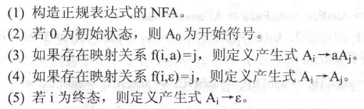
- 正规表达式与上下文无关文法描述的对象
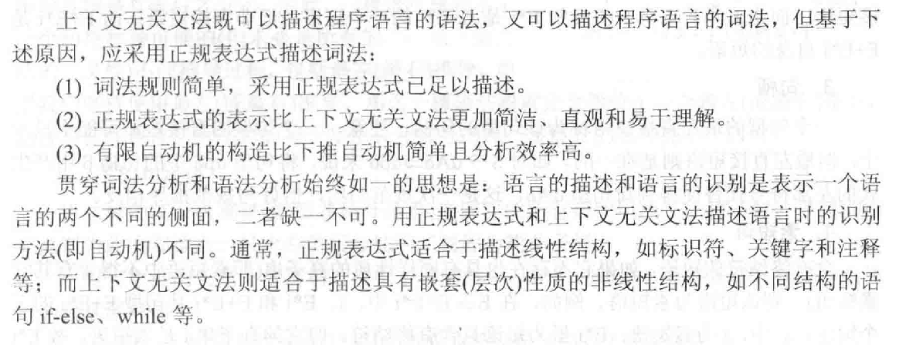
3.2 推导与语法树🌲¶
3.2.1 推导与短语¶
1. 规范推导¶
- 最右推导（规范推导）：
- 对句型中的最右非终结符用相应产生式的右部进行替换
不理解¶
- 最左推导
2. 短语¶
短语属于句型的组成部分
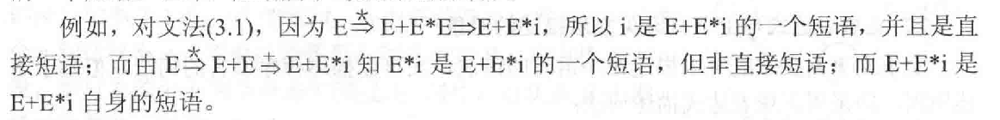
3. 句柄¶
一个句型的最左直接短语
4. 素短语¶
含有终结符的短语。
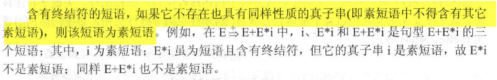
3.2.2 语法树与二义性¶
1. 语法树¶
2. 子树和短语¶
简单子树：只含有单层分枝的子树
- 短语：子树的末端结点(即树叶)组成的符号串是相对于子树根的短语。
- 直接短语：简单子树的末端结点组成的符号串是相对于简单子树根的直接短语。
- 句柄：==最左==简单子树的末端结点组成的符号串为句柄。
- 素短语：子树的末端结点组成的符号串含终结符，且在该子树中不再有含有终结符的更小子树。
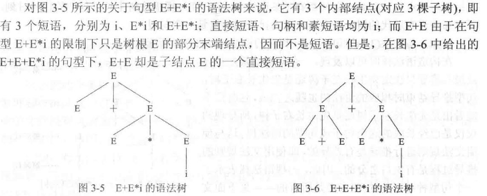
3. 文法的二义性¶
文法的一个句子如果能找到两种不同的最左推导（最右推导），或者存在两棵不同的语法树，则称这个句子是二义性的。
一个文法如果包含二义性的句子，则这个文法是二义文法，否则是无二义文法


所有具备二义性的文法都不适合执行编译程序？
不是。
4. 文法二义性的消除¶
一个文法是二义性，不说明其描述的语言也具有二义性。❓
要区分先天二义性和非先天二义性，非先天二义性是可以消除的。
方法一：不改变文法中原有的语法规则，仅加入一些语法的非形式规定。
方法二：构造一个等价的无二义性文法，即把排除二义性的规则合并到原有文法中，改写原有的文法

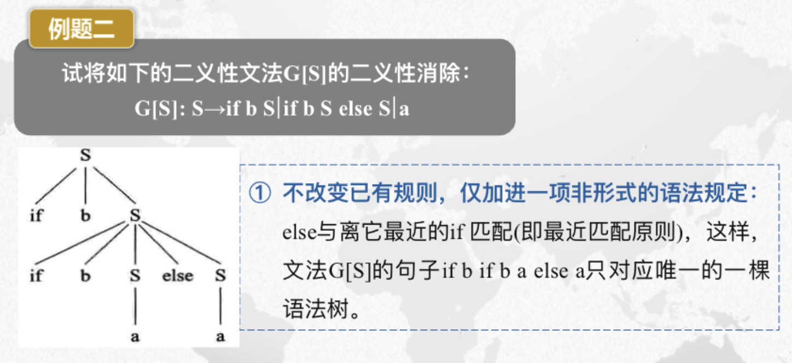
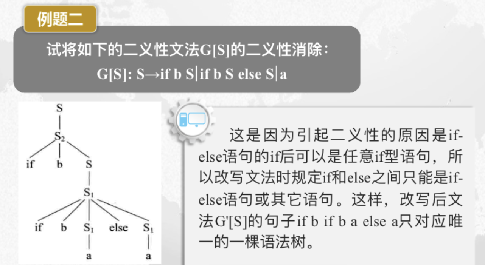
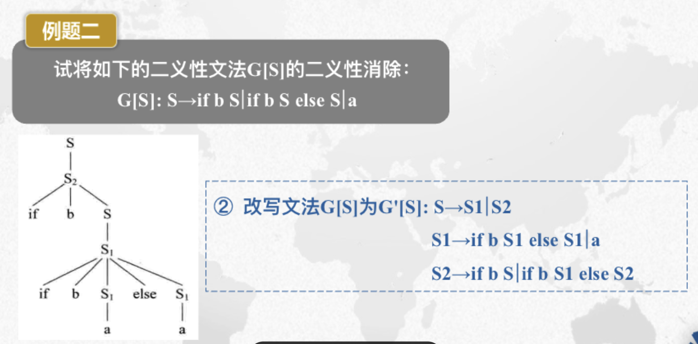
语法分析概述¶
- 功能
- 根据文法规则，从源程序单词符号流中识别出语法成分，并进行语法检查
- 基本任务
- 识别符号串S是否为某语法成分
- 两大类分析方法
- （不带回溯的）自顶向下分析法
- 主要问题
- 左递归问题
- 回溯问题
- 主要方法
- 递归下降分析法
- LL(1)分析法
- 自底向上分析法
- 主要问题
- 可规约串的识别
- 主要方法
- 算符优先分析法 （“最左素短语”）
- LR分析法（“句柄”）
3.3 自顶向下的语法分析¶
-
从文法的开始符出发并寻找出这样 一个推导序列:推导出的句子恰为输入符号串 ;
-
或者说 ，能否从根结点出发向下长出一棵语法树，其叶结点组成的句子恰为输入符号串。
存在不确定性
3.3.1 递归下降分析法¶
递归下降方法是一种自顶向下的分析方法
1. 自上而下分析存在不确定性¶
2. 确定的自上而下分析¶
- 文法不含左递归
- 无回溯
==3. 消除左递归==¶
引入一个新的非终结符，把含有左递归的产生式改为右递归。
- 识别直接左递归形式
- 依据公式进行变换
扩展到多项：
- 识别直接左递归形式
- 依据公式进行变换
消除间接左递归
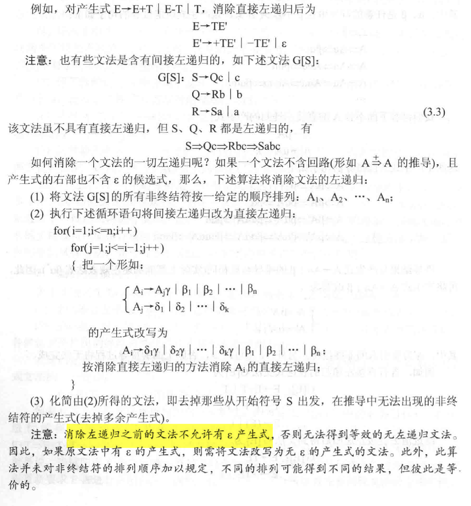
4. 消除回溯¶
回溯发生的原因在于候选式存在公共的左因子
- 识别
- 改写(反复提取左因子)
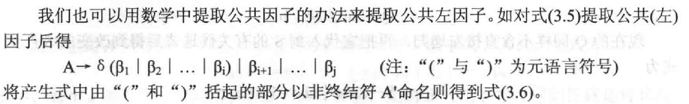
5. 递归下降分析器¶
...待补充
3.3.2 LL(1)分析法¶
- 别名
-
预测分析法
-
特点
-
不带回溯的，无递归的方法
- 必要时消除左递归和回溯
-
含义
- 第一个L：从左到右扫描输入串
- 第二个L：在分析过程中总是采用最左推导
-
1:只需向右查看一个符号就可决定选择哪个产生式进行推导（所以也有LL(k)文法）
-
一个上下文无关文法是LL(1)文法的充分必要条件：
- 对于每一个非终结符A的任何两个不同产生式\(A \rightarrow \alpha | \beta\)，都满足
- 无回溯：A的每个候选式都不存在相同的首字符
- 无二义性：在分析表的统一栏目中不出现\(A \rightarrow \alpha\)和\(A \rightarrow \varepsilon\)这种多重入口的情况
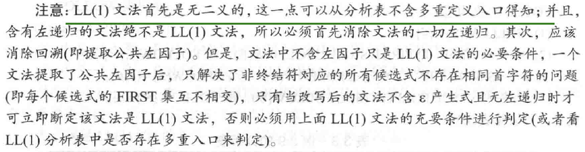
1. 表驱动的LL(1)分析器¶
-
LL(1)分析器的组成
-
一张LL(1)分析表（预测分析表）
- 一个先进后出的栈
-
一个控制程序（表驱动程序）
-
LL(1)分析器的说明
-
输入串以"#"结尾
- 分析栈的栈底是"#"；当分析栈中只剩下"#"，输入串指针也指向串尾的"#"时，分析成功
- 分析表是一个矩阵M;分析表M[A,a]中的内容为一条关于A的产生式
- 控制程序根据分析栈顶符号x和当前输入符号a来决定分析器的动作：
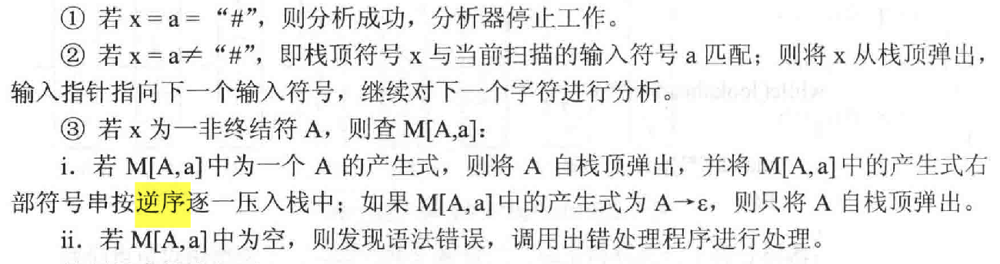
注意要逆序压入栈
2. LL(1)分析表的构造¶
\(FIRST(\alpha)\)：\(\alpha\)的所有可能推导的开头终结符或可能的\(\varepsilon\)
\(FOLLOW(A)\)：是所有句型中出现在紧随A之后的终结符或"#"
(1)FIRST集构造方法
(2)FOLLOW集构造方法
- 对文法开始符号S，置#于FLLOW(S)中
- 若有\(A \rightarrow \alpha B \beta\)，则将\(FIRST(\beta)/ \{\varepsilon\}\)加入\(FOLLOW(B)\)中，此处的\(\alpha\)可以为空
- 若\(A \rightarrow \alpha B\)或\(A \rightarrow \alpha B \beta\)，且\(\beta\)通过若干步可以推出\(\varepsilon\),那么FOLLOW(A)=FOLLOW(B)。
构造 FIRST 集和FOLLOW 集的过程有可能要反复进行多次，直到每一个非终结符的FIRST 集和FOLLOW集都不再增大为止。
(3)构造分析表M
题目
Text Only 1递归下降分析器由一组递归函数组成，且每一个函数对应文法的( )A.一个非终结符
B.多个非终结符
C.一个终结符
D.多个终结符
Text Only 1递归下降分析法是一种（ ）的分析方法，文法的每个非终结符对应一个（ ）。A.自底向上，函数
B.自顶向下，语法树
C.自底向上，语法树
D.自顶向下，函数